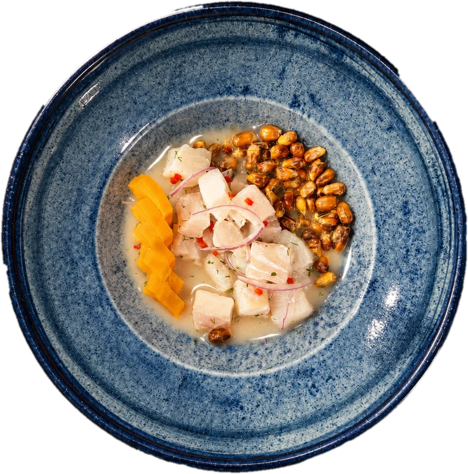
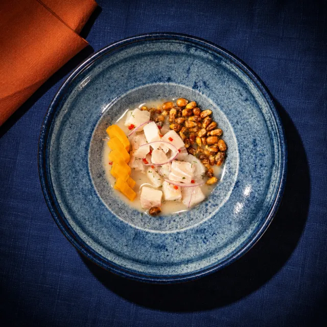
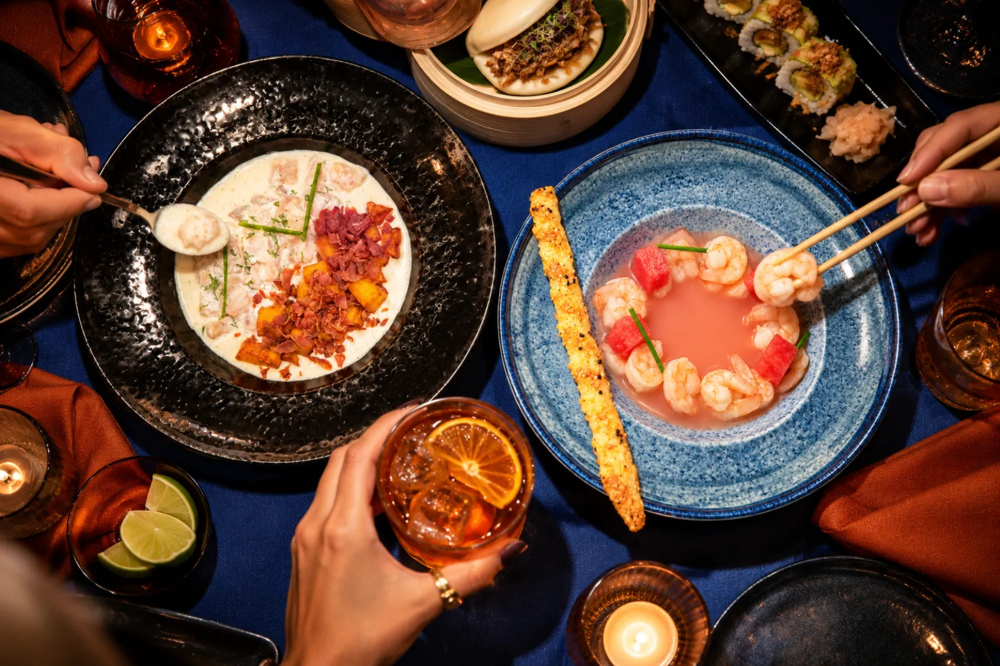
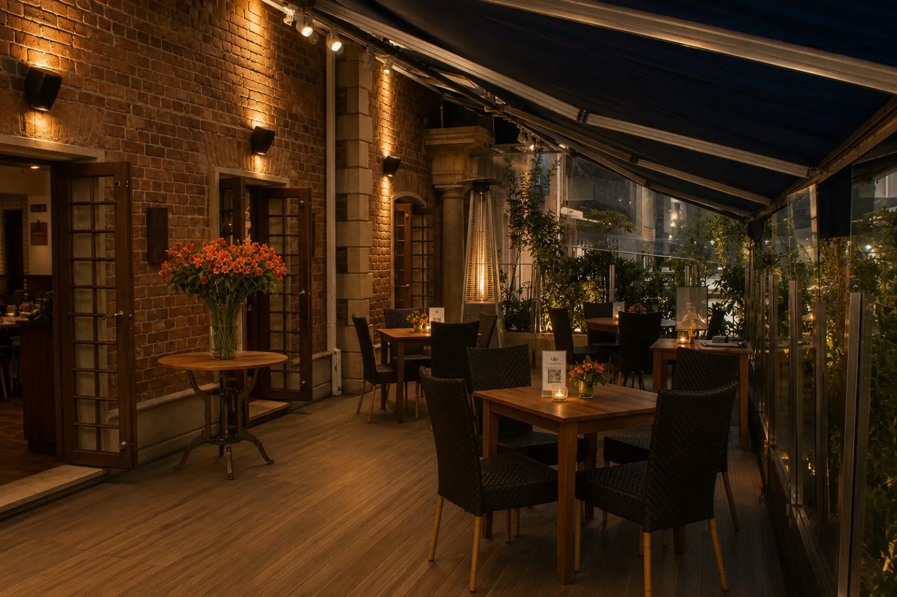

Cra. 9 # 77-1Temporada 2026
Festival de Ceviches, Sushis y Baos
Octubre y noviembreChef Carlos Accinelli

Más de 30 platos creados junto al chef peruano Carlos Accinelli para explorar nuevos sabores. Esta temporada, el ceviche también toma el lugar del plato fuerte.
Muchas formas de probar el mar
Muchas formas de probar el mar.
Restaurante de mar y cocina fusión. Este festival lo cuenta en siete formas: elige la tuya.

Ceviches01
Esta temporada, el ceviche también toma el lugar del plato fuerte.

al centro de la mesa
Ceviches con cuchara, sushis en diez bocados y baos para comer con las manos: el festival se pide para compartir.
Escenas ilustrativas creadas a partir de fotos reales de los platos del festival.


Una casa de ladrillo en la Carrera 9, con terraza bajo el toldo azul.
- Dirección
- Carrera 9 # 77-1, Bogotá
- Horario
- Todos los días, de 12 m a 6 p. m.
Reserva tu mesa
Nuestras puertas están abiertas siempre para ti, pero nunca sobra ser precavido y reservar una mesa.
Elegir día y hora